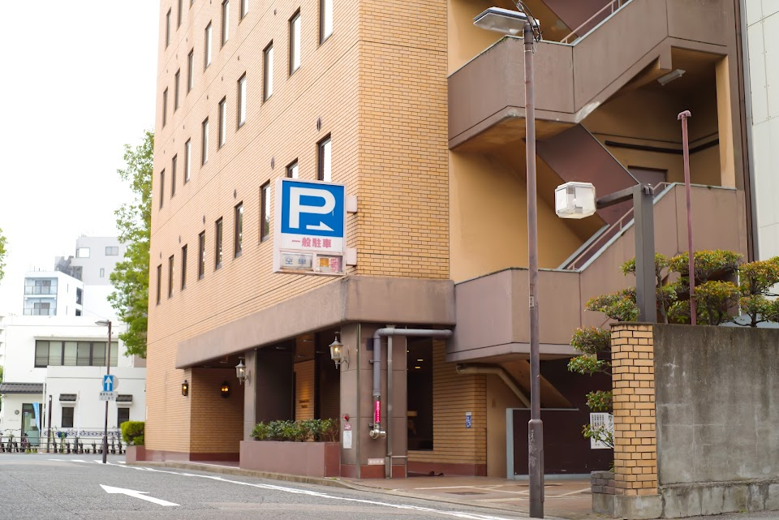

이 호텔은 시설·오감 관련 불만이
후쿠오카 평균보다 1.9배 많아요!

위치
8-21 Kamikawabatamachi, Hakata Ward, Fukuoka, 812-0026 일본 · 1박 약 6만원 (10만원 미만 가격대)
이 호텔에서 실망할 확률
16%
후쿠오카 평균(12%)보다 주의가 필요한 수준이에요
최근 투숙객 100명 중 16명이 심각한 문제를 언급했어요
최근 투숙객 100명 중 16명이 심각한 문제를 언급했어요
우수
평균 12%
위험
최근 리뷰일수록 높은 가중치로 반영됩니다
분석 리뷰 162건 · 기준 2026년 3월
분석 리뷰 162건 · 기준 2026년 3월
카테고리별 위험도
후쿠오카 평균 = 50 · 3배 나쁘면 100
레이센카쿠 호텔 카와바타
후쿠오카 평균
리스크 상세 분석
대분류 6개 · 소분류 20개 전체 — 숫자는 위험도(0~100), 후쿠오카 평균이면 50이에요
🧼위생 경보
양호 · 위험도 17 · 후쿠오카 상위 6%
양호평균 50위험
-
침구/바닥 청결얼룩 · 머리카락 · 먼지17
-
청소 서비스청소 불량 · 쓰레기 방치20
-
해충/곰팡이벌레 · 빈대 · 곰팡이0건12
👂오감 지옥
주의 · 위험도 64 · 후쿠오카 하위 18%
양호평균 50위험
-
벽간/외부 소음옆방 소리 · 도로 소음76
-
악취 역류하수구 · 담배 · 곰팡내47
-
기기 소음에어컨 · 냉장고 소음61
🏚️시설 사기단
위험 · 위험도 72 · 후쿠오카 하위 7%
양호평균 50위험
-
공간/노후화비좁음 · 낡은 시설73
-
냉난방/수압냉난방 불량 · 수압 약함85
-
네트워크/TV와이파이 · TV 불량39
🗺️동선 파괴자
양호 · 위험도 26 · 후쿠오카 상위 23%
양호평균 50위험
-
역/거점 접근성역에서 멀다 · 찾기 어려움28
-
지형적 난관언덕 · 계단26
-
주변 편의성편의점 · 식당 없음18
-
허위 위치 정보위치 정보 불일치0건12
💬불친절 레이더
양호 · 위험도 18 · 후쿠오카 상위 4%
양호평균 50위험
-
응대 태도불친절 · 무시14
-
처리 지연체크인 지연 · 대기24
-
사후 대처보상 거부 · 무대응0건12
-
소통 불가언어 소통 문제0건12
🔒안전 그림자
양호 · 위험도 35 · 후쿠오카 상위 46%
양호평균 50위험
-
보안 시설도어락 · CCTV30
-
주변 치안밤길 · 우범지대26
-
사생활 보호방음 · 프라이버시49
위험 70+주의 45~70양호 ~45
불만 리뷰 5건 미만 소분류는 위험 등급을 붙이지 않아요 · 인용문은 리뷰 원문 발췌입니다
구글 별점 분포
최근 1년 2점 이하 리뷰 비율은 8% 입니다.
총 168건
- 1점3%
- 2점5%
- 3점21%
- 4점35%
- 5점36%
리뷰
심각도 · 최신순
이런 호텔은 어떠세요?
비슷한 가격대·가까운 위치에서 실망 확률이 낮은 순이에요
-
양호실망 확률 4%

베스트 웨스턴 플러스 후쿠오카 텐진-미나미
ベストウェスタンプラス福岡天神南구글 4.1 · 리뷰 698개1박 약 9만원 -
양호실망 확률 3%

리치몬드 호텔 하카타 에키마에
リッチモンドホテル博多駅前구글 4.1 · 리뷰 989개1박 약 8만원 -
양호실망 확률 5%

Wellcabin Tenjin
ウェルキャビン天神구글 4.2 · 리뷰 459개1박 약 5만원 -
양호실망 확률 5%

야오지 하카타 호텔
八百治博多ホテル구글 4.0 · 리뷰 2,057개1박 약 9만원 -
양호실망 확률 5%
호텔 홋케클럽 하카타
ホテル法華クラブ福岡구글 4.2 · 리뷰 2,157개1박 약 7만원 -
양호실망 확률 6%

코트 호텔 후쿠오카 텐진
コートホテル福岡天神구글 3.8 · 리뷰 726개 -
양호실망 확률 5%

몬탄 하카타 호스텔
モンタン博多 montan HAKATA구글 4.5 · 리뷰 1,285개 -
양호실망 확률 8%
YOU STYLE HOTEL HAKATA
Fukuoka구글 4.5 · 리뷰 144개1박 약 7만원